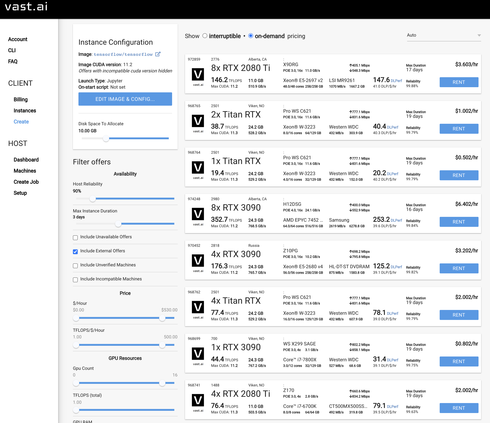

A Scanner DRAClyA PenTest Story
Vlad Grigorescu
2021-06-10
vlad@zeek.org
https://github.com/grigorescu/dracly
A PenTest Story
Vlad Grigorescu
2021-06-10
vlad@zeek.org
https://github.com/grigorescu/dracly
About Me
- Security Engineer @ UIUC, CMU, NCSA, ESnet
- Core Zeek Developer
- Consultant, focused on PenTesting
- Some CTF wins, a few CVEs
What this Talk Is
- The story of a PenTest
- What defenses were in place
- How they failed (and why it matters)
- How they can be improved
What this Talk is NOT
- A vendor pitch
- A reflection of anyone else's views
- Revolutionary
PenTest Overview: Mission
- Collaboration with a hospital on medical research
- Scope was expanded with the school's COVID response
- Can an attacker access PHI?
Logistics
- Determine scope
- I told the CSO when the test began and ended
- External test: No access provided
- Internal test: Virtual machine with no special access provided
Open-Source Intelligence
- Reverse DNS (
nmap -sL) - Certificate Transparency Logs
OSINT: EDU
- InCommon Federation
eduroam

OSINT: EDU
Mailing lists
We monitor two full /16, 3 /24, and 2 partial /16, in front of any local FW devices.
…
I switched to the bro-simple-scan package.
Scanning
bro-simple-scan
bro-simple-scan
event connection_attempt(c: connection)
{
- if ( c$history == "S" )
+ if ( c$history == "S" || c$history == "SW")
add_scan(c$id);
}
masscan
static unsigned char default_tcp_template[] =
// ...
- "\x04\x0" /* window fixed to 1024 */
+ "\x00\x0" /* 0-sized window */
Update Zeek Packages

Zeek ssh/main.zeek
event ssh_auth_attempted(c: connection, authenticated: bool) {
# ...
# We can't accurately tell for compressed streams
if ( c$ssh?$compression_alg && \
( c$ssh$compression_alg in compression_algorithms ) )
return;
Scanning Demo
Next Steps
- Look at TLS certificates
- Identify:
- applications,
- versions,
- vulnerabilities
CVE-2018-1207

RCE Demo
Persistence
- Until a reboot
- Until an update
- Forever?
- Cron jobs
- syslog-ng hooks
- Overwrite an updated file?
CVE Results
Recovering Credentials
avctpasswd:
{ "username": "root",
"MD5v3Key": "dysn21V658AsG...=",
"level": 2,
"enabled": 1,
"displayName": "Administrator",
"home": "/flash/data0/home/root",
"shell": "/bin/sh",
"ipmiPriv", "0x1FF",
"sshEnabled": 1,
"lastModified": 1405248653,
"snmpv3PrivType": 1, "snmpv3Enabled": 0, "snmpv3AuthType": 2,
"sha1v3Key": "kCGUFB7Z2RnC...=",
"sha256Hash": "cNpBuoId7+Fl...=",
"sha256Salt": "F77E82DAED468...",
"solEnabled": 1
}
Recovering Credentials
% ./drac_exec 10.87.5.42 | ./dump_hashes.sh
10.87.5.42_root:F269FB2DA3CD3A842D15263736A57D51E55600819F195E678C3E8152ED3B5693:F77E82DAED468941C81D9B08AC755695
vast.ai

Hashcat
hashcat -O -a 3 -m 1410 hashes --username --hex-salt
f26...c755695:"C4tnapz!"
Session..........: hashcat
Status...........: Cracked
Hash.Name........: sha256($pass.$salt)
Hash.Target......: f269...755695
Speed.#1.........: 9746.6 MH/s (70.35ms) @ Accel:8 Loops:1024 Thr:1024 Vec:1
Speed.#2.........: 9507.4 MH/s (72.12ms) @ Accel:8 Loops:1024 Thr:1024 Vec:1
Speed.#3.........: 9691.5 MH/s (70.75ms) @ Accel:8 Loops:1024 Thr:1024 Vec:1
Speed.#4.........: 9641.1 MH/s (71.12ms) @ Accel:8 Loops:1024 Thr:1024 Vec:1
Speed.#5.........: 10081.9 MH/s (68.01ms) @ Accel:8 Loops:1024 Thr:1024 Vec:1
Speed.#6.........: 9043.4 MH/s (75.82ms) @ Accel:8 Loops:1024 Thr:1024 Vec:1
Speed.#7.........: 9819.2 MH/s (69.83ms) @ Accel:8 Loops:1024 Thr:1024 Vec:1
Speed.#8.........: 9642.4 MH/s (71.11ms) @ Accel:8 Loops:1024 Thr:1024 Vec:1
Speed.Total......: 77173.6 MH/s
Recovered........: 1/1 (100.00%) Digests
Pivoting
- Find other management interfaces with the same credentials
- Layer 2 attacks to other management interfaces
- Scan non-management interfaces: https://github.com/ncsa/ssh-auditor
Got root
[root@proxy-01 ~]# w
21:21:53 up 598 days, 8:38, 1 user, load average: 0.00, 0.01, 0.05
USER TTY FROM LOGIN@ IDLE JCPU PCPU WHAT
root pts/0 vlad-pentest 21:21 1.00s 0.00s 0.00s w

Layer 2 Attacks
2: eno16180012: <BROADCAST,MULTICAST,UP,LOWER_UP> mtu 1500 qdisc pfifo_fast state UP group default qlen 1000
link/ether 00:50:56:81:fa:08 brd ff:ff:ff:ff:ff:ff
inet "100.120.95.17/21" brd 100.120.99.255 scope global noprefixroute eno16180012
Target Hosts
- DCs
- VMware
- LDAP
- Puppet
- git
- Jenkins
- vmtest-josh
- prod-dc-old
Bettercap

Kerberos Hashes
[21:39:47] [net.sniff.krb5] krb-as-req 1.2.3.124 -> dc1 : $krb5$18$falken$ZOMBIE.EDU$nodata$3206...
[21:39:47] [net.sniff.krb5] krb-as-req 1.2.3.129 -> dc1 : $krb5$18$david$ZOMBIE.EDU$nodata$5d81...
Findings
Conclusions
- Comprehensive detections
- Aware of any gaps
- Baselining, determining communication patterns
- Updates
- Segmentation
- https://github.com/esnet-security/curated-pcaps